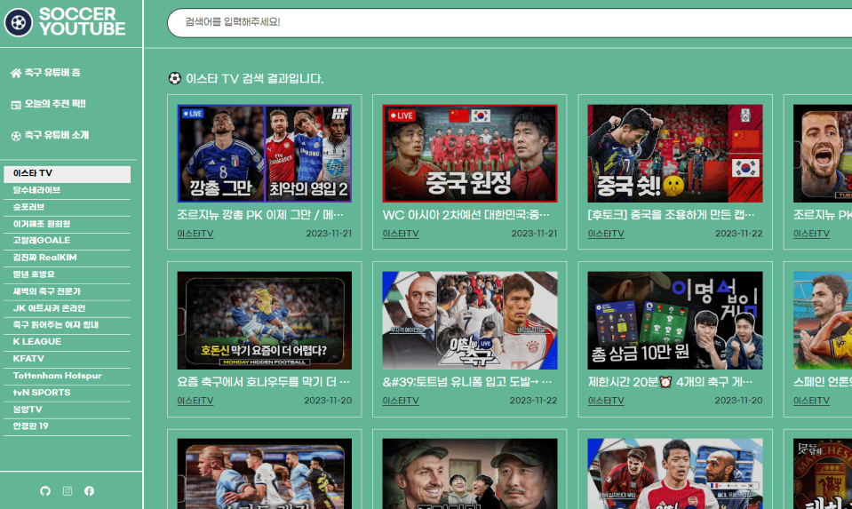

skill
VSC | React
sass | API
Netlify | Postman
Git

축구를 좋아해서 react, axios, swiper, api를 이용해서 soccer youtube를 만들었습니다.
soccer youtube는 축구 팬들을 위한 전용 유튜브 사이트 입니다.
우리는 최신 축구 소식, 트렌드 , 전략, 그리고 멋진 순간들을 모두 모았습니다.
여기에서는 세계 각지에서 벌어지는 축구 경기의 하이라이트 부터,
선수들의 인터뷰, 팀의 훈련 영상까지 다양한 콘텐츠를 즐길 수 있습니다.
code view
skill를 이용하여 만든 소스를 깃을 통해 볼 수 있습니다.
site view
netrify에 올린 파일을 직접 볼 수 있습니다.